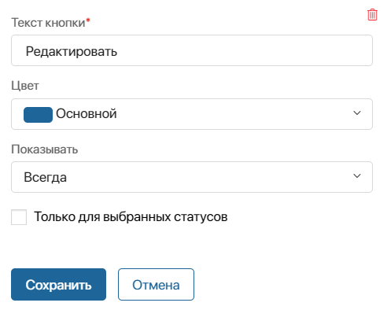
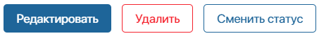
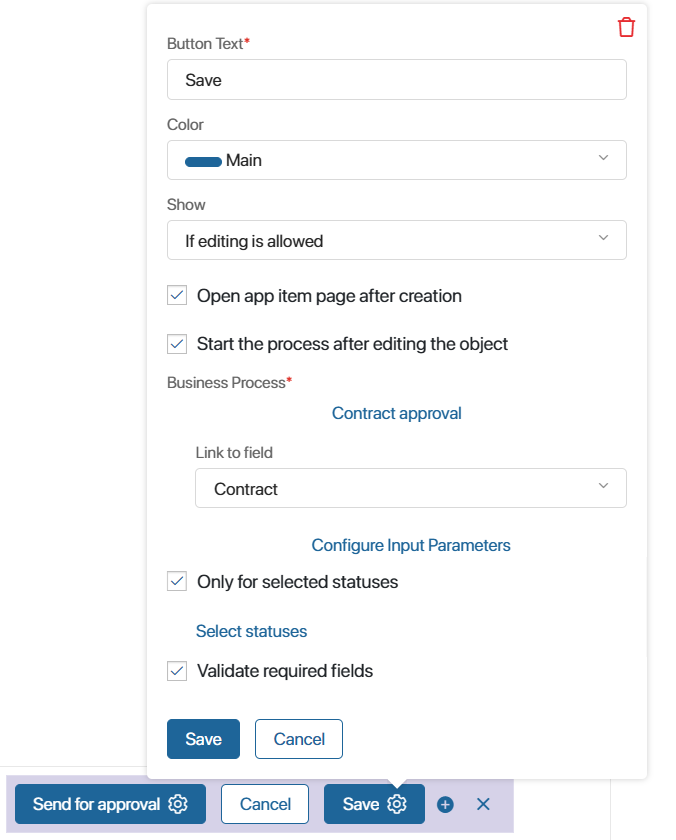
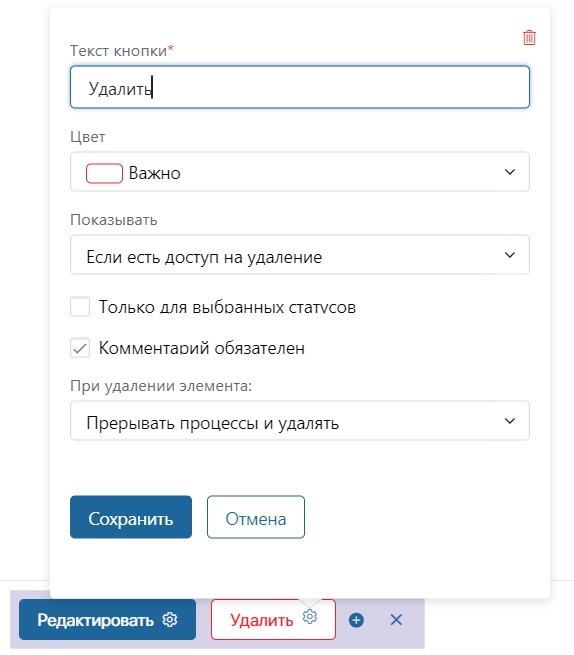
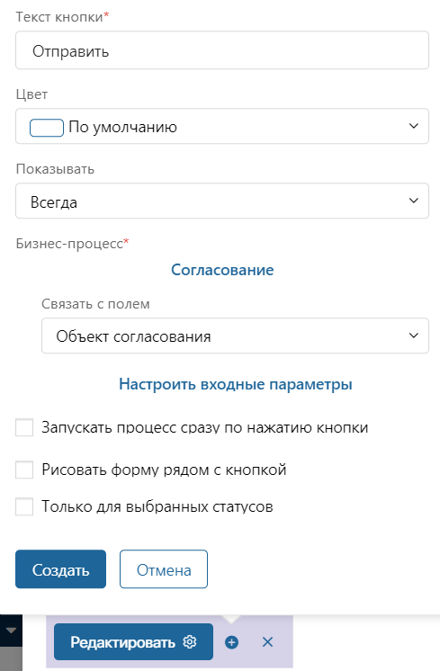
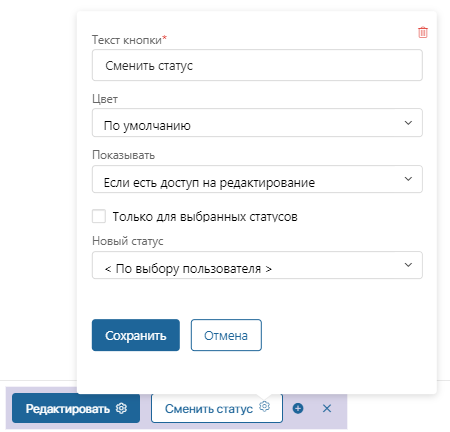
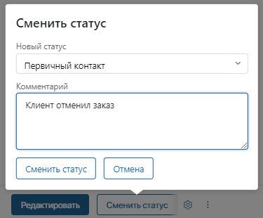
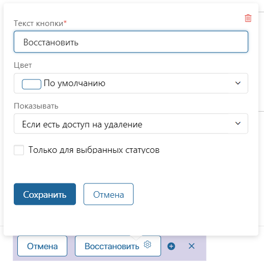

В системе предусмотрены кнопки, которые располагаются в карточках приложения и позволяют изменять и удалять элементы, запускать по ним бизнес-процессы и т. д.
Кнопки, которые можно добавить на карточки: Сохранить, Редактировать, Удалить, Запуск процесса, Сменить статус и Восстановить.
При создании или изменении кнопки задайте её внешний вид, настройте её работу и определите видимость в зависимости от прав пользователя.
Для этого в настройках кнопки заполните поля, общие для всех кнопок, а также определяемые её типом.
Общие настройки
Независимо от типа кнопки, необходимо указать:

- Текст кнопки* — измените название кнопки в карточке;
- Цвет — выберите цвет заливки или контура кнопки в карточке;

- Показывать — укажите, при каких условиях кнопка будет отображаться в карточке:
- Всегда — кнопку увидят все пользователи, которые могут перейти в карточку элемента приложения, то есть имеют права на создание, просмотр или редактирование;
- Если есть доступ на редактирование — кнопка отображается в карточке, если у пользователя есть права доступа на редактирование элемента. Эта настройка доступна только для карточек редактирования и просмотра;
- Если есть доступ на удаление — кнопка отображается в карточке, если у пользователя есть права доступа на удаление элемента. Эта настройка доступна только для карточек просмотра;
начало внимание
Администратор системы всегда имеет полный доступ к приложению, его папкам и элементам. Ограничение прав для него не применяется.
конец внимание
- Только для выбранных статусов — опция доступна для карточек просмотра и редактирования, если у приложения настроены статусы. Она позволяет отображать кнопку только в карточках элементов приложения с выбранным статусом.
Кнопка «Сохранить»
По умолчанию кнопка располагается на карточке создания и редактирования элемента. Её невозможно удалить.
К кнопке в карточке создания автоматически привязывается первый бизнес-процесс, созданный на уровне приложения. Его можно изменить в настройках кнопки или на странице процессов приложения. Подробнее читайте в статье «Бизнес-процессы на уровне приложения».
Вы можете добавить в карточки создания и редактирования дополнительные кнопки Сохранить. Например, с помощью них пользователь может сохранить черновик записи без заполнения обязательных полей или запустить бизнес-процесс, отличный от привязанного к приложению.
Кроме общих настроек, для кнопки Сохранить доступны следующие опции:

- Открывать карточку элемента после создания — поставьте флажок, чтобы сразу отображать карточку нового элемента. Опция доступна только на форме создания;
- Запустить процесс после изменения объекта — включите опцию, нажмите Выберите процесс и укажите процесс системы, который запустится по сохранённому элементу;
- Связать с полем — укажите, в какую контекстную переменную бизнес-процесса будет передаваться сохранённый элемент приложения;
- Настроить входные параметры — передайте значения из свойств элемента в контекстные переменные процесса;
- Проверять заполнение обязательных полей — опция доступна только для добавленной кнопки Сохранить. Снимите флажок, чтобы отключить проверку заполнения обязательных полей при сохранении. Это позволит создавать черновики элементов и вносить недостающие данные позднее. Обратите внимание, если для формы задана функция пользовательской валидации, настроенные в ней проверки для полей будут выполняться.
Кнопка «Редактировать»
Кнопка используется только в карточке просмотра для перехода к редактированию элемента приложения.
Вы можете удалить кнопку, добавленную по умолчанию, или создать новую.
У кнопки Редактировать есть только общие настройки.
Кнопка «Удалить»
Кнопку удаления можно добавить только в карточку просмотра.
При удалении элемента приложения все экземпляры бизнес-процессов, в которых он задействован, прерываются.
Помимо общих настроек, у кнопки Удалить есть следующие опции:

- Комментарий обязателен — если опция включена, при удалении элемента пользователь должен оставить комментарий. Текст комментария отобразится в карточке удалённого элемента в ассоциированной ленте;
- При удалении элемента — опция доступна, если в приложении настроены статусы и среди них есть финальный. В иных случаях элементы при удалении всегда скрываются со страницы и доступны через фильтр Удаленные. Определите, где вы сможете просматривать удалённые элементы:
- Прервать процессы и удалять — удалённый элемент скрывается со страницы приложения. Чтобы просмотреть его, перейдите к поиску по параметрам и воспользуйтесь фильтром Удаленные;
- Прервать процессы и установить статус — при удалении элемент приложения получает выбранный статус, но не удаляется со страницы приложения. Обратите внимание, выбрать можно только финальный статус.
Кнопка запуска процесса
Кнопка добавляется в карточку просмотра и запускает выбранный бизнес-процесс.
Помимо общих настроек, у кнопки есть следующие опции:

- Бизнес-процесс* — процесс, который будет запускаться при нажатии на кнопку;
- Связать с полем — укажите, в какую контекстную переменную бизнес-процесса будет передаваться элемент приложения;
- Настроить входные параметры — передайте значения из свойств элемента в контекстные переменные процесса;
- Запускать процесс сразу по нажатию кнопки — включите опцию, чтобы при нажатии кнопки не отображалась настроенная в стартовом событии форма запуска. Исполнение процесса начнётся с блока, следующего за стартовым событием;
- Рисовать форму рядом с кнопкой — включите опцию, чтобы при нажатии форма запуска процесса отображалась над кнопкой, а не в отдельном окне;
- Размер формы — определяет размер формы запуска бизнес-процесса.
Кнопка «Сменить статус»
Вы можете добавить кнопку в карточку просмотра элемента приложения с настроенными статусами.
Помимо общих настроек, для данной кнопки доступен выбор статуса.

В поле Новый статус выберите, статус, который получит элемент при нажатии на кнопку. Вы также можете выбрать опцию <По выбору пользователя>, чтобы можно было выбрать любой статус из созданных в приложении.
Последовательность смены статусов, установленная в настройках переходов, не учитывается при изменении статуса по кнопке. Кнопку можно использовать, даже если элементу присвоен финальный статус.
Когда пользователь нажмёт кнопку смены статуса, откроется окно для комментария.

Если пользователь добавит комментарий, он отобразится в карточке элемента в ассоциированной ленте.
Кнопка «Восстановить»
С помощью кнопки Восстановить можно вернуть удалённый элемент на страницу приложения и продолжить работу с ним.
Кнопку можно добавить только в карточку удалённого элемента. Для этого перейдите в окно поиска по параметрам и примените фильтр Удаленные. Откройте карточку элемента и создайте кнопку.
Для кнопки Восстановить доступны только общие настройки.

Обратите внимание, если у приложения настроены статусы, восстановленному элементу будет присвоен начальный статус. Например, восстановленная сделка приобретёт статус Новые.